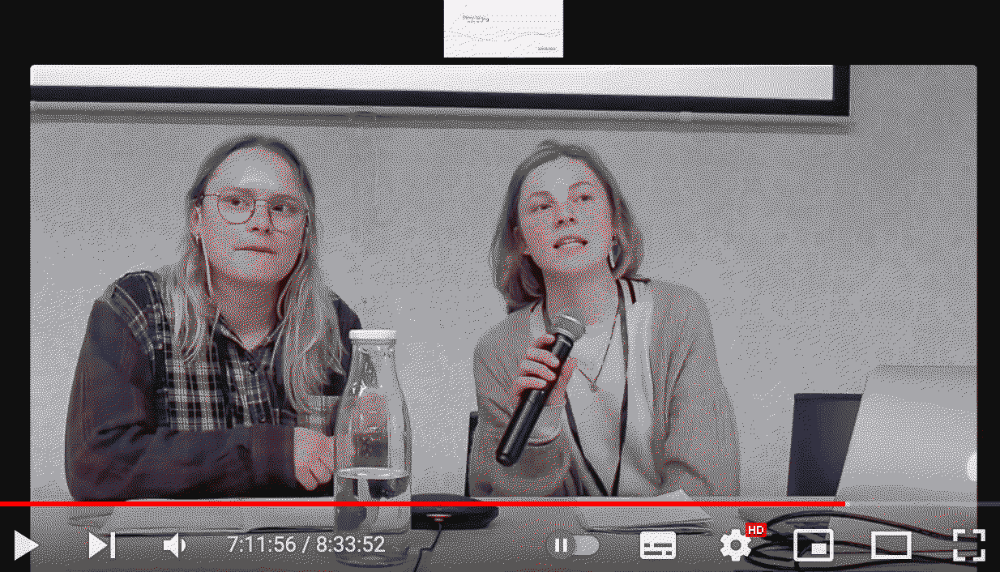

¶
design studio II¶
with Mariana and Jana
the design studio is there to introduce us to the methodology the MDEF programm uses to imagine alternative presents. three phases are defining the structure of our year (actually only nine month). in term I we deal with framing perspectives, in term II we iterate through the practical embodying of scenarios, and in term III we scale ideas and projects up and build infrastructures that help realize them.
my journey so far¶
15. january
After ⅓ of the MDEF journey, it seems like a good time to reflect on what has changed in my practice, what are new insights and what has remained from who I was when I started this course.
where am I now and how did I change?
Starting with the master program, my frustrations were in the ignorance politics of global (economic) infrastructure and the inequal distribution of its consequences. My sociology background made me question the power of power and what it is that makes (us) people so ignorant and disconnected. A topic, that my sociology-thesis dealt with, linking it to environmental attitudes. During my last years in the field of architectural design, my research became more practice oriented, and I realized that it needs a redefinition of global infrastructures towards enabling instead of controlling local dynamics of different societies. It appeared to me that the dependence on one narrative about the future is blinding and disempowering people through a depiction of the unknown as a dangerous insecurity. As in my previous studies also here I soon came to the point of being paralyzed when it comes to breaking things down, focusing on one concrete topic rather than extending my fingers into all directions. Yet this whole term was all about exploring and staying open (framing and exploring perspectives), so for the sake of the exercises I took (fresh) water as an example to visualize and prototype the localities of this resource. I was interested in (fresh) water and the uneven distribution of this vital resource across the globe. I co-created several design interventions, all related to my emerging design space in which certain weak signals appear repeatedly: Anthropocene conflicts, how technology can aid equality, and how collaboration can include more-than-human species.
Conceptually I engage with thinkers that write about the importance of storytelling and more-than-human narrations of the realities we oversee. I gain more knowledge about (de)colonialist practices and the ancestral knowledges that (in my reality) are being continuously overwritten by capitalist and eurocentric philosophies. I become interested in multi-species collaboration and what it means to integrate non-human agents into design processes. This I explore through experimenting with listening practices that focus on non-human voices (water), with exploring what it means to be a non-human in the city that tries to access water (24h living-with challenge), with experimenting with water-probing to find out for whom (fresh)water is actually “fresh” and healthy, using artificial intelligence to define water cycles within the city, organizing a visit to the water facilitation center that treats Barcelona’s fresh (and dirty) water (Aigües de Barcelona in Llobregat del Prat), and facilitating an experience for others to step out of their human shoes (and into water). Next to my practical exploration, I read about the global politics of (fresh)water cycles, get angry about the practices of water grabbing and get fascinated about the many cultures that personify and value water as its own righteous entity. My design space at this point (design space 02 / 2022) deals with climate consciousness and how a global governance must set guidelines for healthy ecologies on one side yet must allow local contexts to feed out of their histories and built situated realities. As events unfolded, I realized that I am not interested in multispecies-design-practices per se. I see my agency more in creating spaces, in curating spaces where voices can resonate in. I am interested in disrupting the monophony of future(s) and in the potential of storytelling as a tool for speculation. This, all in the sense of human agency and voice. With my sociology education in the back of my head, I am constantly seeing the various (social) realities that are being created through stories and that empower (and disempower) people and more-than-human realities. I see a strength in fictional and collaborative processes that decentre the (human) self by consciously engaging with the bigger contexts we are embedded in. Throughout this journey, my path overlaps with my classmate Myrto’s and we decide to work together. We develop an extensive research about binary-system thinking, post-nature, concepts of transitioning, and speculative fiction. We explored theories such as post-humanism (Timothy Morton, Slavoj Zizek),the mesh (Timothy Morton), anthropocene - capitalocene – cthulhucene epoch (Donna Haraway, Anna Tsing Lowenhaupt, Bruno Latour), carrier bag (Donna Haraway), the Gaia-theory (James Lovelock) to name a few. Together we built a design space (design space 04 / 2023) that deals with narrative creation, space facilitation for imagination, and methodologies that promote concern and curiosity towards the unknown. We aim to combat a monophonic future in which things remain as they are. Based on that, we created a question-catalogue with which we try to engage a wider public into our conversations and inspire an open dialogue.
Overall, my focus remains on narrative (co-)creation and my ambitions still and even more revolve around the power of storytelling and contextualization. My goal is to amplify diverse narratives that include more-than-human perspectives yet are not focused on multispecies collaborations. This aims to combat the political and economical one-sidedness when it comes to addressing essential needs like clean air, water, and nutrition.
Having had expectations of focusing my interests and developing concrete directions, I have to say that I am more lost than ever with what I do and where I go. It were the de-centralizing and multi-directional exercises that expanded my comfort zone and challenged me in constructive yet disorienting ways. I might have a broader toolbox to draw from yet there are still a thousand ways I could go, and no tool helps me making decisions more lightly. This is a particular challenge for me, as I derive satisfaction from concrete planning and implementation. Although I experience the benefits of widening and being open to immediate situations, I will try to combine both approaches to find (self-)realisation in the processes that arise from the contexts I find myself in.
three take-aways from the last term:
1. think about how to integrate more-than-human entities into the MDEFs concept of “community”
2. allowing myself to focus on what’s interesting to me, also if this is linked to non-material things such as poetry and writings
3. record, reflect and document (structured and consistently) the emerging situationships
continuing with the idea of working in individual and collaborative design spaces that help us set boundaries to our research interestest, I re-do my Design Space here:
design space 03 / 2023¶

1PP design intervention in context¶
29. january
a first person perspective (1PP) approach means immersing oneself personally into a problem- and/ or design- space. this enables me to comprehend experientially the topic of interest. a 1PP intervention is one way to externalise ideas. my ideas (aka alternative presents) are still broad but deal with imaginative thinking and its potentialities to transform the unknown into a space for creating dynamic, multi-perspective worldviews. through my collaborative 1PP interventions, I aim to put this idea into practice and experiment with its potential.
after the first design dialogues some roads lead to 1PP interventions that I excecuted with my research-partner Myrto. one of them is especially interesting to mention here as it is closely linked to the theoretical concept we talked about. we visiting our mentor Oscar Tomico to observe his 1PP lifestyle. during this intervention we had the opportunity to observe what it means to live with plants from a 1PP. I realize (very cliché though) that having a lot of expectations of what information I might gain, stand in the way of actually experiencing the information that’s there. the decision not to use all the material we brought and only to record our conversation was a way of overcoming the anticipated map. I take from this the importance to have a clear question (goal?) that must come with the openness to work with what’s at stake and be an attentive observer. a more detailed description of our visit at Oscar’s place is described in this plantiversal lexicon.
This experience shows (once again) how often expectations of what will happen, how things will develop, are not met. though, if I remain open to the unexpected, to the unknown ways of research, something fruitful and interesting can be the starting point for further developments (isn’t that food for new expectations?). we brainstorm how it would be to make this home a space for others to live a 1PP perspective in a more accessible and inviting way. could thiss be a place for researches to sleep in? to work on their personal things? to drink, to eat, to live a while?
design space 04 / 2023¶
as it becomes more clear that Myrto and me are a good team and plan our next design interventions together, we merge our individual Design Spaces into a collaborative one. Inhere we can now together (re)define our interests, weak signals and ongoing projects.
network of co-responsibility - autoethnography¶
05. february
taking responsibility often means facilitating space for other voices to be able to resonate in. a 1PP design intervention can be a stage to other agents and communities (human and non-humans). we talked about facilitation during our community engagement class and it appears that this is not a simple task but on the contrary asks for timid planning and consideration. therefore it seems important to stand still and reflect on the agents that play a role in projects that are thought to be seslf-initialized. I talked about Autoethnography earlier on and it is closely linked to this as it describes the involvment of the me as a designer and importantly, the act of reflecting on my own personal experiences and perspectives. these reflections are then used as a basis to develop design strategies. autoethnography is the combination of personal reflections with an analysis of the social context.
things that can guide my investigation and the analysis of my personal reflections:
(1) define concrete boundaries to my object of interest, (2) reflect on the authenticity, my own truthfulness in my 1PP, (3) decide whether the experience is scholarly and can be written down or is just something plausible and thus less useful, (4) stay critical about whether I learn something, (5) practice self-revealing communication and don’t filter out anything, (6) try to only use ethnographic material when useful, (7) consider the generalizability of the object of investigation.
what is my network of co-responsibility? next to Myrto, from whom are my interventions dependent and who and what does have impact in the course of them? who and what are driving forces for my design practice?
a conference not
in our heads it seemed a sproutful idea to put together various thinkers and let them share their experiences on a conference we would organize. however, we were able to take part in such conference ourselves, organized by a research institute that deals with transformations in the educational system. we presented our work in the form of a paper on this small conference about speculative fiction and its important in the context of (future) education. here is a more detailed description of that intervention. it happened in the basement-rooms of the Disseny Hub Barcelona and there were about 100 participants in person and another 100 that streamed the conference via online platforms.
the agents participating and influencing this interventions were the dark and window-less basement room, the classical way of presenting research-papers on a stage and having a knowledgable audience listeing and taking notes. what mainly makes us reconsider the power of this format is the particular language that we use in these formats. a conference with a very particular topic attracts people with that very particular interest. this can be very fruitful as it allows for collaboration and common background knowledges yet it bears the danger of not questioning certain paradigms and using a vocabulary that becomes more narrow the more it is used. we all talk the same language (in regard to thinkers, concepts and philosophies), yet to somehow who is not engaging with the authors and text we all do, it seems hard to follow or comprehend what we are talking about. the idea of a conference in which specialists come together thus seems opposing our initial goal to open and widen conversations and perspectives on the realities we live and share. even if we are aware of the multiplicity of kinds and formats conferences can take on, we are reconsidering our idea of organizing a conference ourselves after these three days with the Esbrina Research Group. these days remained a place in which works, practices, experiences are presented and exchanged rather than created in being-with.

the human agents of that interventions on the other hand led to interesting connections and a network of people with which we will continue to work with. “sensclusion” is a research project led by artist and anthropologist Quim Bonastre that deals with the socio-cultural connection of people to spaces in vulnerable neighbourhoods and how healthy ties can be fostered. these interventions that I will co-design here and are not in my hands alone, we share the responsibitlity with the places we will engage with, the people that we encounter, and the methods we use.
design space 05 / 2023¶
I integrate all these new ties and ideas and (re)consideration of previous thoughts in a next Collaborative Design Space in which I share the responsibilities of its development.
radical situatedness - the infrastructure¶
26. february
radical situatedness builts on the network on co-responsibility and emphazises even more on letting go of control over directing the design intervention. it is understood as making use of immediate environments and context and letting the research be influenced by what is there instead of trying to build up a surrounding that seems a priori fruitful to investigate.
having talked, and though, and brainstormed, and mindmapped, and read, and written, and so much more the last month about facilitating spaces for speculating, we organize a workshopvin which more than us (Myrto and me), (and maybe even more-than-human actants) imagined non-realities. more detailed you can read about that intervention here.
we went into it motivated and naiv (which I consider good - even when reflecting on how it went), without too many expectations but a good plan in our heads and hands. we created some ply-wood cards that could guide us and the participants through the day. I will summ up some of the reflections Myrto and me had on that day and the situation we found ourselves in:
Participants
• selected and invited by facilitators
• group size was good for the collective process (10 + 2 facilitators)
• there was litle diversity in terms off backgrounds
• everyone was somehow interested and linked to he topic
Tools:
• instruction cards (prepared with the laser cutter in ply-wood) were pretty but not functional for the intended use because they were too small in size / we had not enough printed to provide each with their own
• pens and papers were enough to support the verbal input
• we could try more multimedia tools like paintings, recorders, iPads in the future
Space:
• convenient location, nice atmosphere, and hospitable environment
Day and Time:
• saturday morning worked well, people don't usually work and it wasn't too early or late (from 11 a.m. to 2 p.m.)
• duration was a little too long, especially the last part (3 hours)
Topic/ transition in focus:
• relevant, linked to all paricipants, futue-oriented (transition from in-person education to hybrids with online-exchange platforms)
• the transiton already had happened partly and seems very much linked to realities we all experience in our everyday lifes: might have caused a lack of imagination
• still overall a interesting trigger for speculative, fictional discussions about an unknown future
Workshop Format:
• the creational part was somewhat sidelined
• great exchanged and sharing of visions (pretty realistic) but left it there
• failed to collectively ideate more radical
• failed to create completely new narratives (is that a problem?)
we are confused what to do with all this information and are writing promts that we feed the Artificial intelligences ChatGPT, Midjourney and DALL-E with. we want to get inspired how we can transform all our abstract thought and wordplays into somoething habtic, some installation or structure that is threre-dimensional and touchable.
what comes out are interesting new points of departure: images and stories about movable, educational pods

we are intrigued what would happen if we would integrate the AIs in the workshop process itself during follow up interventions.
design space 06 / 2023¶
our collaborative Design Space right after the workshop is confusing and multidirectional. we are a bit lost
alternative presents¶
12. march
“Alternative presents give designers the key to opening escape offering space to radically imagine and that would offer different outcomes in favor of more optimistic future scenarios than the ones we are being presented as the most plausible results of our current business-as-usual practices”
by oscar tomico
talking about alternative presents means creating a present tense narration of something not existing but something that seems desireble when reflecting on the investigations and experiments our interventions have led us to.
the MDEF’s 1PP methodology aims to help to externalize ideas through design-interventions that follow the principles of autoethnography and radical situatedness. My idea (aka alternative present) is that through imaginative thinking we can transform the unknown into a space for creating dynamic, multi-perspective worldviews. Through my collaborative interventions, I aim to put this idea into practice and experiment with its potential.
My vision (autoethnographic boundaries): I believe that amplifying (critical and speculative) stories can strengthen our sense of responsibility (ancestry) and possibilities (futurism) towards the pasts, presents, and futures, and that language and imagination can be used to make visible the interconnectedness of people across cultures and times. I also believe we can use language and imagination to express and explore the (human) experiences in the worlds, to provide a space for the marginalized and under-represented, and to make visible the interconnectedness (of people) across cultures and times.
My mission: inspiring fictive thinking and free speculation about the transitions that we are going through to combat a homogenous and rigid habit of perceiving what’s around us as static.
My question (radical situatedness): what do I have at stake to materialize this open, inclusive, non-limiting place in which human and more-than-human narrate past(s), the present(s), and the future(s) in togetherness?
Together with my so often mentioned friend Myrto, we are working towards diversifying narratives of the futures through collective intelligences that include more-than-human thoughts.
Besides this exploration on how imaginative narratives can combat that one-sided storyline about the future, I found myself working with two other classmates Marielle and Carolina on decolonialisation. We came together in the FabLab track in which we got introduces to the hands-on part of the MDEF-facilities. Starting with a simple idea of raising awareness about the heroization that is still practiced in cities around the world, we developed a stamp that stamps a QR-code onto the object of colonialism. Scanning it will lead to a map on which the stamped location appears as a pin and the pins of other stamped places can be seen. This project is still in its beginning, yet I am excited about developing this into further directions. Here, we aim to provide a space for BIPOC-people to express their anger and as a side-effect maybe making all others realize the daily-life absurdities they are reproducing and living in.
my alternative present¶
I envision an alternative present in which imaginative practices inspire a holistic understanding of oneself in relation to others and the world by embracing the interconnectedness of different species and ecosystems. This combats the notion of isolated individuals that promote rigid and inflexible ideas about how the world should operate. Where realism reinforces a sense of human superiority and ignores the complex relationships that exist within and between lifeforms and other intelligences on Earth, Imagination offers the freedom to think the I (and civilizations) in symbiotic relationships with the earth and its ecosystems, recognizing progress and stagnation as nuances of one single process of change. It furthermore acknowledges the complexity and interdependences of the world(s) by expanding beyond the human realm to more-than-human philosophies by recognize the intelligence(s) and agencies of non-human entities like animals and AI. In this alternative present, the unknown represents certainty about a constant transformation of currently valid rules and conditions, which is interpreted as opportunity.
design space 07 / 2023¶
linking all these thoughts and approaches, I individually mapped my current Design Space as followed. with this I try to answer following questions:
where are the boundaries of my interventions?
what sense do the imagined biograpies, the drifting processes make?
how did my interventions evolute?
how and where do I see them in the next interations?